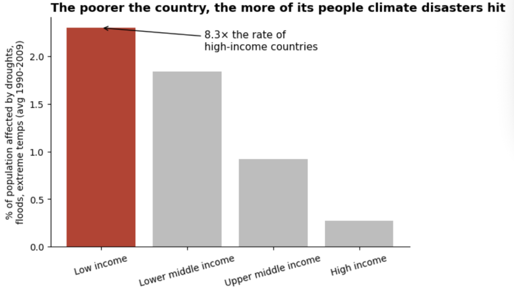
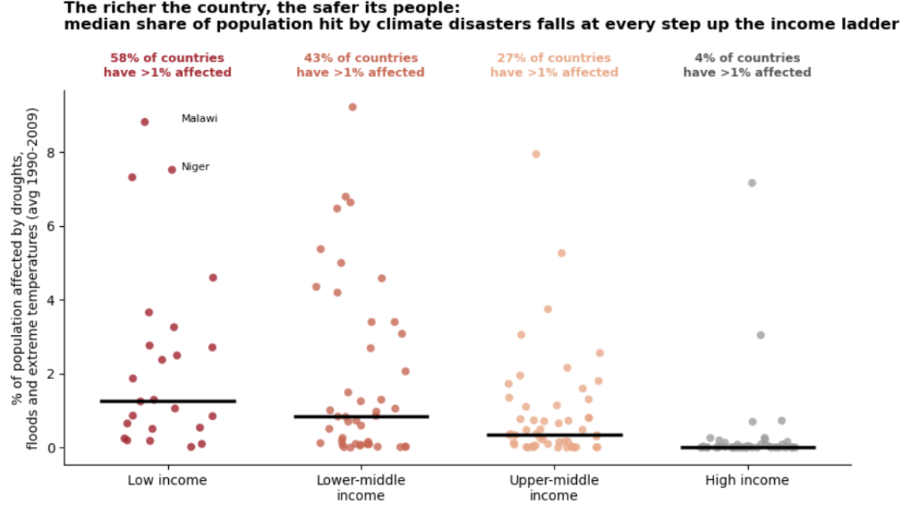
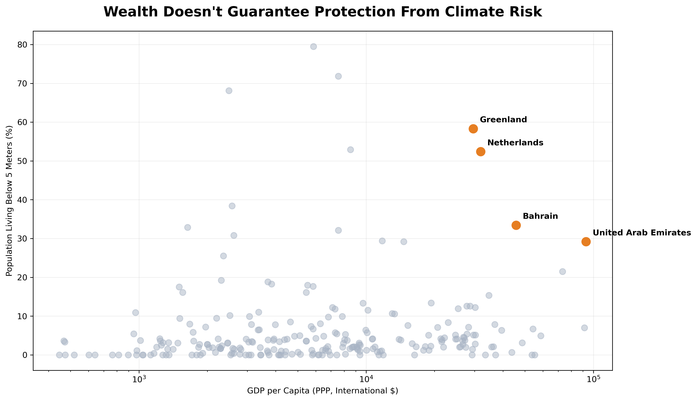
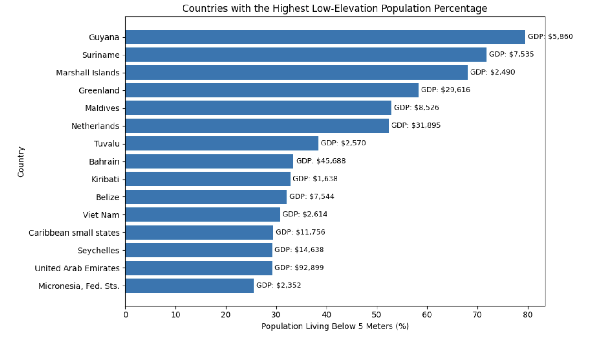

Proposition: Low-income countries are more affected by climate-related disasters than high-income countries
FOR the Proposition

Design Decisions and Rationale:
- Figure #1 Decision 1: using group mean instead of median for raw dist. Score: -1.5 I used the mean because some very low income countries inflate that value. making the gap look larger than it actually is. We thought about using the mean but that makes the gap look smaller.
- Decision 2: Make the low income bar red and everything else gray. Score: 1 The color makes the bar a lot more noticeable, emphasizing the effect presented. But this decision did not change any values so we think it's not that deceitful. I considered choosing a different color, like blue, but that didn't pop out as much as the red.
- Decision 3: "8.3x the rate of high income countries" Score: 0.5 - This number was not enlarged or exaggerated in any way, so we think it's okay. I considered not having this as part of the chart but I think it feels more impactful with it there.
- Figure #2 Decision 1: Show every country as a dot, with the group median as a black bar Score: 1.5 Plotting all countries keeps the data transparent. We considered a bar chart but the strip plot looks more credible and was easier to see
- Decision 2: Add a “% of countries with >1% affected” annotation above each group Score: -1 This turns the dot cloud into one number per group (58%, 43%, 27%, 4%), and the steady drop is the strongest evidence for the claim. The numbers are computed from the data, so they're accurate. But I picked the 1% threshold because it produces a better gradient.
- Decision 3: Using a color scale from red to gray Score: -0.5 The colors fading makes the effect feel more harmful and makes the higher income label feel "safer". No values were changed for this. We thought of using more blueish colors but that didn't feel as impactful.

AGAINST the Proposition

Design Decisions and Rationale:
- Decision 1: Highlighted wealthy countries in orange Score: -1.0 highlighted wealthy countries in orange while keeping the remaining countries gray. This helps emphasize that wealthy nations also face significant climate exposure, making their vulnerability appear more substantial than the overall distribution suggests.
- Decision 2: Use a logarithmic scale for GDP per capita Score: -0.5 Used a logarithmic scale to display countries with different income levels on the same graph. This compresses the differences in wealth, making wealthy and poorer countries appear closer together.
- Decision 3: Focus on population living below 5 meters Score: -1.5 Used low-elevation population percentages as an indicator of climate exposure. This highlights potential coastal vulnerability, which can be somewhat misleading because living at a lower elevation does not necessarily mean experiencing greater damage from climate-related disasters.
- Decision 1: Including GDP labels next to each country Score: +2 Added GDP per capita to provide information on the countries’ income levels and to show which countries are high and low income. This helps compare countries’ income levels with their low-elevation population exposure.
- Decision 2: Showing top 15 countries with highest low-elevation population percentage Score: -1 I chose the top 15 countries with the highest percentage of population living below 5 meters to focus the visualization on countries with particularly high exposure. This also shows climate-related exposure is not limited to one type of country, which is lower income countries.
- Decision 3: Sorting the bars by low-elevation population percentage Score: +2 I sorted the bars from lowest to highest percentage so readers can easily compare the values and see which country has the highest percentage.

Final Reflection
The pro-proposition side was straightforward, because the data really does show a gap. Median disaster impact falls at every step up the income ladder (about 1.25% to 0.85% to 0.35% to roughly 0%), so the work was mostly choosing which summary to show. The anti side was much harder. When we plotted the same indicator, the “not true” argument was mostly exceptions, and a reader could see that the high-income group sat near zero. To argue against the proposition, we ended up shifting the question from disasters that actually affected people to exposure (the share of population living below 5 meters). That shift was the biggest persuasive move in the project, and it was more consequential than any color or label. What surprised us was how little the individual design choices mattered compared with the choice of what to measure. Highlighting the Netherlands and UAE in orange, using a log scale, and sorting the bars all helped, but the real work was done by picking an indicator where wealthy countries look vulnerable. We also found that the same data could support opposite stories without any false numbers. The 8.3 times ratio, the “58% / 43% / 27% / 4%” annotations, and the top-15 bar chart are all computed correctly. The deception came from which statistic we reported (mean vs. median, a 1% threshold), which subset we showed (top 15 only), and which indicator we used. Our scores reflect this: the choices we rated most deceptive (-1.5) were about framing and measurement, and the ones we rated earnest (+2) were about making the data easier to read, like sorting bars and labeling GDP. Showing every country as a dot and putting GDP labels next to each bar were the choices that most helped a skeptical reader check our claim. We define ethical analysis and visualization as persuasion that a reader could verify and would not feel tricked by after seeing the full picture. A practical test is whether a choice would still work if we disclosed it. Emphasis through color, ordering, or choosing a defensible summary statistic passes. Choices that fail are the ones that only work when the reader doesnt notice them: hiding sample sizes, implying a measure means something it doesnt. A threshold chosen to produce a clean gradient is hard to place, since it is accurate but picked for effect. So we think the boundary comes down to whether the reader ends up with a belief the data supports. Persuasion that shapes attention is acceptable, and persuasion that creates a false impression is not. It also helps to name the slant, which is why documenting and scoring each decision was useful.